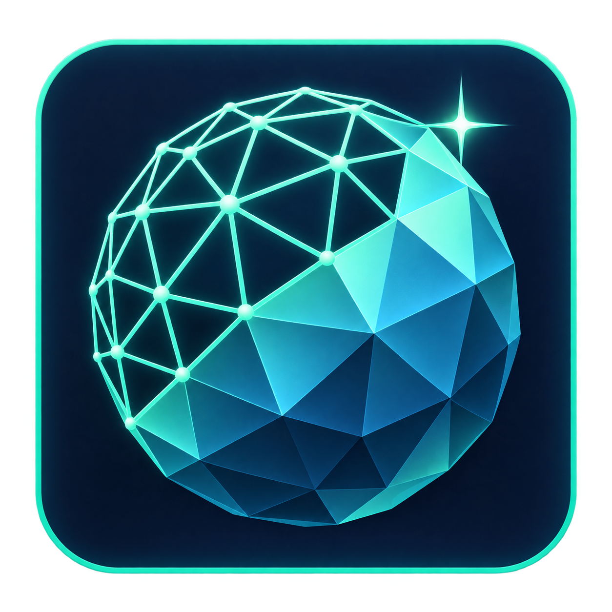
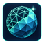
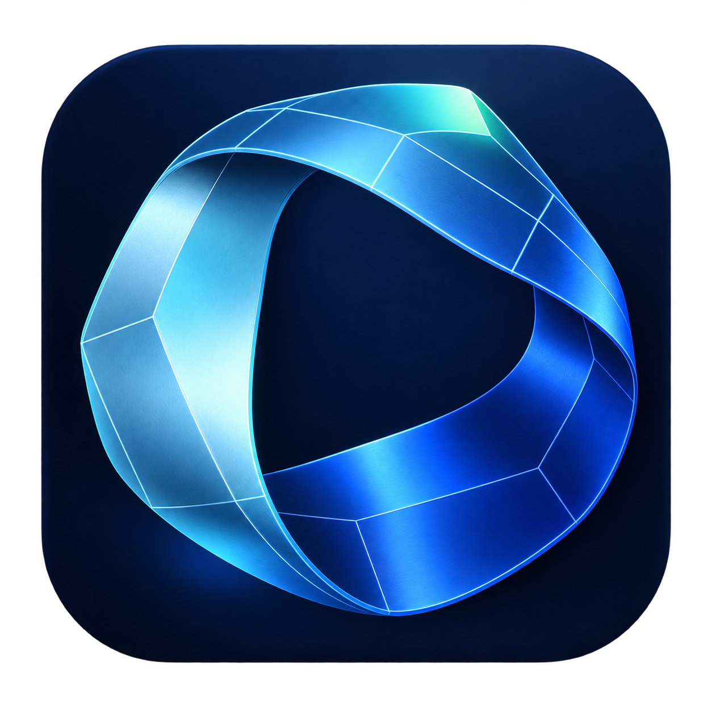
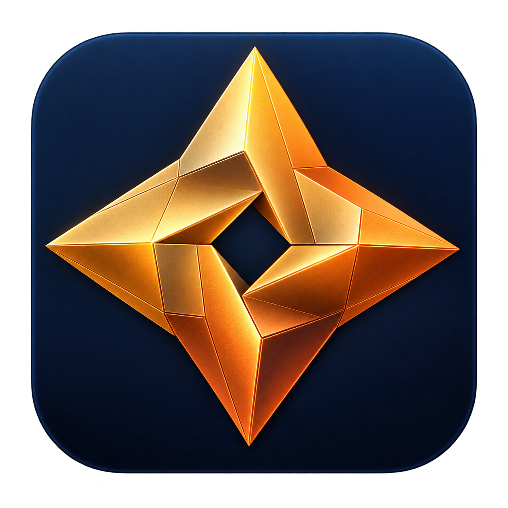

A · 青色网格球
可编辑的网格与实体几何，延续工具现有的青色。当前默认方案。

为特效网格启动器设计。三款均附透明 PNG 与包含 16–256 像素的 Windows ICO。

可编辑的网格与实体几何，延续工具现有的青色。当前默认方案。


流动的面片与参数化曲面，强调特效制作。
下载 ICO透明 PNG
由几何面片组成的能量星，轮廓醒目。
下载 ICO透明 PNG图像使用内置 image_gen 生成，仅进行 ICO 格式与尺寸导出。查看完整生成提示词